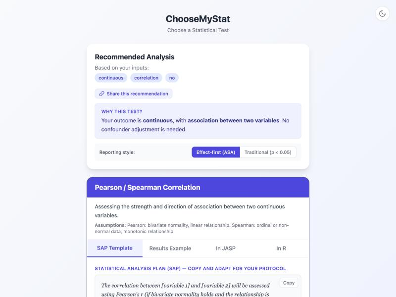
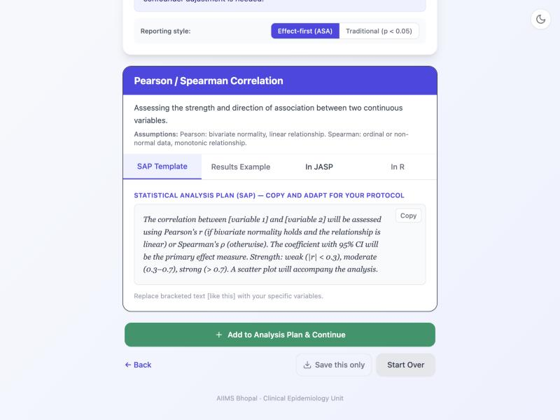

BMI and HbA1c Correlation
in Type 2 Diabetes
Pearson / Spearman Correlation
Walk through ChooseMyStat to choose the right test and calculate the sample size for studying the linear association between BMI and HbA1c in newly diagnosed T2DM patients.
Study Scenario
Dr. Verma, a PG resident in General Medicine at a district hospital in Madhya Pradesh, wants to study the linear association between BMI and HbA1c in newly diagnosed Type 2 Diabetes Mellitus (T2DM) patients. The clinical question is straightforward: do patients with higher BMI also tend to have higher glycated haemoglobin levels?
Based on prior Indian studies (Mohan et al. 2007, CURES cohort; Ramachandran et al. 2010), the expected correlation coefficient is moderate positive (r ≈ 0.35). This is a cross-sectional study measuring two continuous variables on each participant — a classic correlation analysis.
- Variable 1: Body Mass Index (kg/m²) — continuous
- Variable 2: HbA1c (%) — continuous
- Design: Cross-sectional, no intervention
- Expected correlation (r): 0.35 (moderate positive)
- Significance level (α): 0.05 (two-sided)
- Power: 80%
Open the App and Choose a Pathway
Go to choose-my-stat.vercel.app. You will see the landing page with a brief introduction to what the app does.
You will see five pathway cards. Since we want to study the association between two continuous variables (not compare groups), we do not choose "Comparing Groups / Before-After". Instead, we need the pathway that handles correlation and association.
Step 1 in the App: Outcome Type
The first question the app asks is: "What type of outcome variable are you measuring?"
Both BMI and HbA1c are continuous variables — they are numeric measurements on a ratio scale. BMI is measured in kg/m² and HbA1c in percentage (or mmol/mol in IFCC units).

Step 2 in the App: Association (2 Variables)
Next, the app asks about your comparison structure. Since we are studying the association between two continuous variables (not comparing groups), we select the association option.
Step 3 in the App: Confounders
The app asks: "Do you need to adjust for confounders or covariates?"
In this initial analysis, Dr. Verma wants to simply quantify the bivariate association between BMI and HbA1c. There is no adjustment for age, sex, duration of diabetes, or other covariates at this stage. A simple correlation coefficient is sufficient.
The Result: Pearson / Spearman Correlation
The app recommends Pearson Correlation (if the data are approximately bivariate normal) or Spearman Rank Correlation (if the data are non-normal or contain outliers). Both are valid for quantifying the linear association between two continuous variables.

Pearson vs. Spearman — Which One?
Pearson's r measures the linear association between two variables and assumes both variables are approximately normally distributed (bivariate normality). It is the default choice for interval/ratio data that meets this assumption.
Spearman's ρ (rho) is a rank-based measure that does not assume normality. Use it when: (a) one or both variables are skewed, (b) there are significant outliers, or (c) the relationship is monotonic but not strictly linear. In Indian clinical samples, HbA1c is often right-skewed in newly diagnosed patients, so Spearman may be more appropriate.
Scroll down on the result page to find the SAP template — a ready-to-use paragraph for your thesis protocol describing the correlation analysis, including a mention of which coefficient to use based on normality testing.

Sample Size Calculation
The sample size formula for testing a correlation coefficient uses Fisher's z transformation. The key formula is:
Formula for Correlation Sample Size
n = [(Zα/2 + Zβ) / C(r)]² + 3
where C(r) = 0.5 × ln[(1 + r) / (1 − r)] is the Fisher z-transform of the expected correlation coefficient r.
Now fill in the parameters from our study scenario:
| Parameter | Value | Why? |
|---|---|---|
| Expected r | 0.35 | Moderate positive correlation from Mohan et al. (CURES) and Ramachandran et al. |
| C(r) = Fisher z-transform | 0.3654 | C(0.35) = 0.5 × ln(1.35/0.65) = 0.3654 |
| Zα/2 | 1.96 | For α = 0.05, two-sided |
| Zβ | 0.842 | For 80% power |
| Test type | Two-sided | We test for any correlation (positive or negative) |
| Dropout / non-response | 10% | To account for incomplete data (missing BMI or HbA1c values) |
Sample Size Result
Applying the formula:
n = [(1.96 + 0.842) / 0.3654]² + 3 = [2.802 / 0.3654]² + 3 = [7.668]² + 3 = 58.8 + 3 ≈ 62
You need 62 participants to detect a correlation of r = 0.35 with 80% power at the 5% significance level. After adding 10% for incomplete data, you should recruit approximately 69 patients.
What You Get from ChooseMyStat
In addition to the test recommendation and sample size, ChooseMyStat provides several ready-to-use outputs for your thesis or protocol:
SAP Template
A pre-written Statistical Analysis Plan paragraph describing your correlation analysis, including normality testing and the choice between Pearson and Spearman.
Results Example
A template showing how to report correlation results (r or ρ, 95% CI, p-value) following standard reporting guidelines.
R Code
Ready-to-run R code for computing Pearson and Spearman correlations, including scatter plot generation and normality checks (Shapiro-Wilk test).
G*Power Instructions
Step-by-step instructions for verifying your sample size calculation in G*Power using the "Correlation: Bivariate normal model" test family.
Key Takeaways
- Pearson vs. Spearman — choose based on your data: Use Pearson's r when both variables are approximately normally distributed and the relationship appears linear. Use Spearman's ρ when the data are skewed, contain outliers, or the relationship is monotonic but not linear. Always check normality (Shapiro-Wilk test, Q-Q plots) before deciding.
- r = 0.35 is clinically meaningful in epidemiology: Do not dismiss moderate correlations. In multifactorial diseases like T2DM, a single variable rarely explains more than 10–15% of the outcome variance. An r of 0.35 is consistent with findings from large Indian cohort studies (CURES, ICMR-INDIAB).
- Fisher's z transformation is essential for sample size: The correlation coefficient r has a bounded, skewed distribution. The z-transformation normalises it, enabling valid sample size calculations and confidence interval construction.
- Always report 95% CIs alongside p-values: A p-value tells you whether r is significantly different from zero, but the 95% confidence interval tells you the plausible range of the true correlation. For r = 0.35 with n = 62, the 95% CI is approximately (0.11, 0.55) — confirming a positive but imprecisely estimated association.
- Correlation is not causation: A positive BMI–HbA1c correlation does not prove that higher BMI causes higher HbA1c. Confounders such as physical inactivity, dietary patterns, and genetic predisposition may explain part of the observed association. For causal inference, consider multivariable regression or a longitudinal design.
Ready to find the right test for your study?
Try ChooseMyStat Yourself